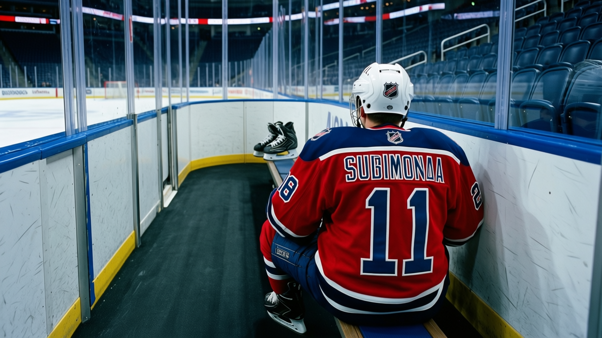

RUMOR METER: Sylvain Cote Signed on Christmas. He's on the Shelf by the 29th. 🔥🔥
The signing-then-IR pattern now hits a 43-point club in its third week. Four contracts this month, four IR entries.
 E.J. "Ears" CallahanInsider · The Hot Stove
E.J. "Ears" CallahanInsider · The Hot StoveThe signing-injury pattern: 3 contracts, 3 IR entries, 0 causes on record

 Sylvain Cote74 put pen to a $19,640 deal with
Sylvain Cote74 put pen to a $19,640 deal with  Washington Capitals on December 25. The league's injury list carries his leg with an onset between December 28 and December 29. He returns January 23.
Washington Capitals on December 25. The league's injury list carries his leg with an onset between December 28 and December 29. He returns January 23.
Three days between the signature and the shelf. The desk logged this pattern twice before.  Vladimir Orszagh79 signed with
Vladimir Orszagh79 signed with  Nashville Predators and the leg landed between December 15 and 17, back January 8. Nagy was shelved four days after his signing, a story filed December 13. Now Cote. Three new contracts, three IR entries, all within the first four days.
Nashville Predators and the leg landed between December 15 and 17, back January 8. Nagy was shelved four days after his signing, a story filed December 13. Now Cote. Three new contracts, three IR entries, all within the first four days.
No cause is on the record. The league designates only the body part and the window. The desk logs timing.
A second flame because of where the pattern lands. Washington Capitals is 17-12-5, 43 points, third in the [[team:WSH|Southeast]]. Their morale average is 97.0, the fourth-highest among all 30 clubs. They carry $57.58M in payroll with a cost per point of $1.34M. They are in the playoff race and spending the league's cheapest salary on a 73-rated defenceman who cannot play.
Washington now has 4 men on the injured list.  Kip Miller75's shoulder keeps him out until February 7. That is 17 players in the lineup from a team that scored 151 goals through 36 games. Cote was a depth signing, a third-pairing body or a penalty-kill specialist at $19,640. Out until January 23 means he misses roughly 20 games of roster math.
Kip Miller75's shoulder keeps him out until February 7. That is 17 players in the lineup from a team that scored 151 goals through 36 games. Cote was a depth signing, a third-pairing body or a penalty-kill specialist at $19,640. Out until January 23 means he misses roughly 20 games of roster math.
A man who would know says the club is monitoring the pattern internally but has not changed its signing approach. The desk has no reason to doubt that, though three names and three dates make coincidence a harder sell each time it adds a fourth.
Watch the next contract filed before January 15. If the pattern holds, a fourth signing hits the IR within the first week of 2005.
CONFIRMED vs. DENIED
CONFIRMED: Sylvain Cote signed Washington Capitals on December 25 at $19,640. IR entry carries leg, onset between December 28 and December 29, return January 23.
DENIED: No causal link between the signing and the injury can be asserted from the record. The league does not record causes.